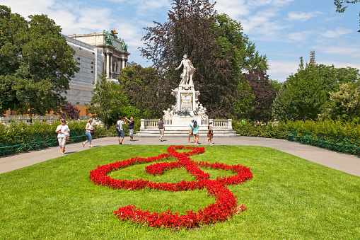
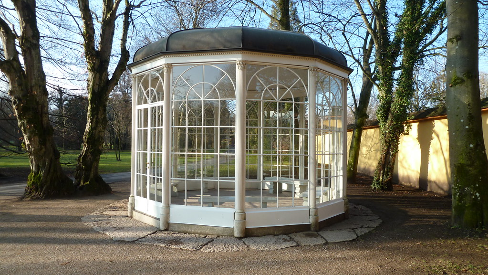
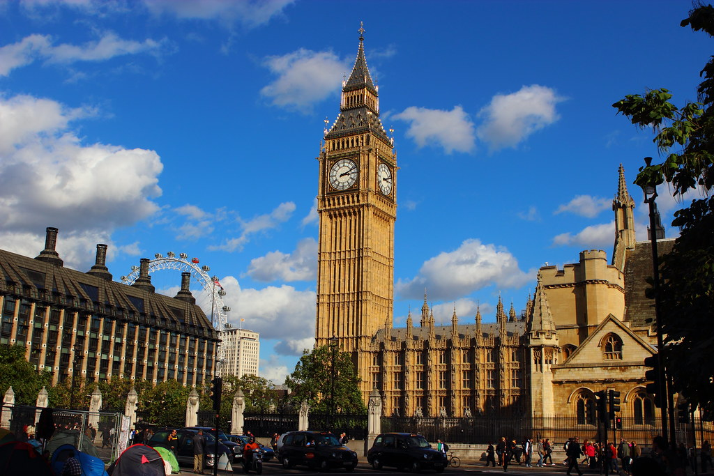
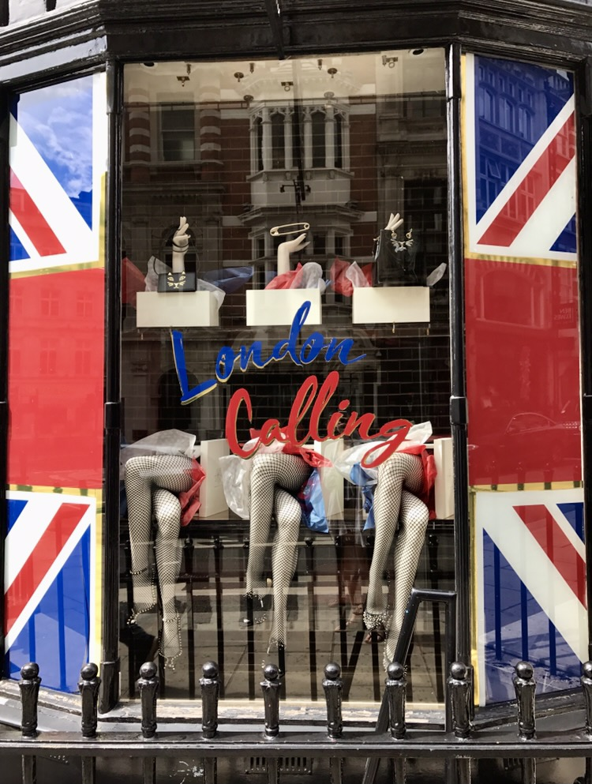
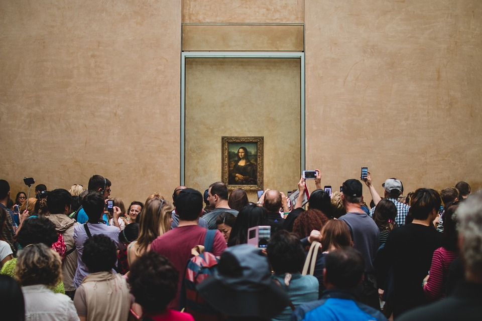
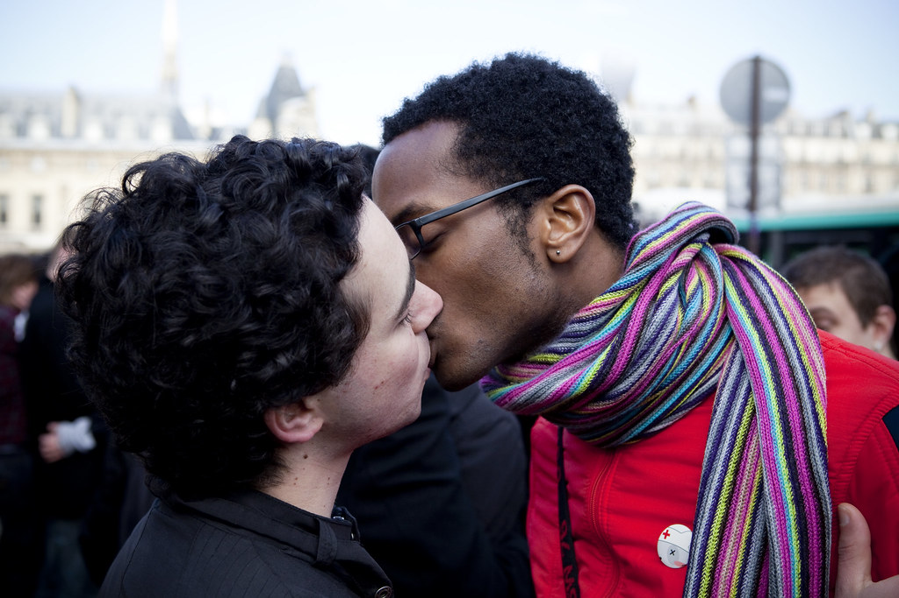
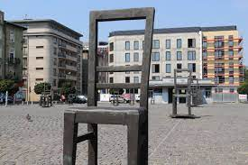
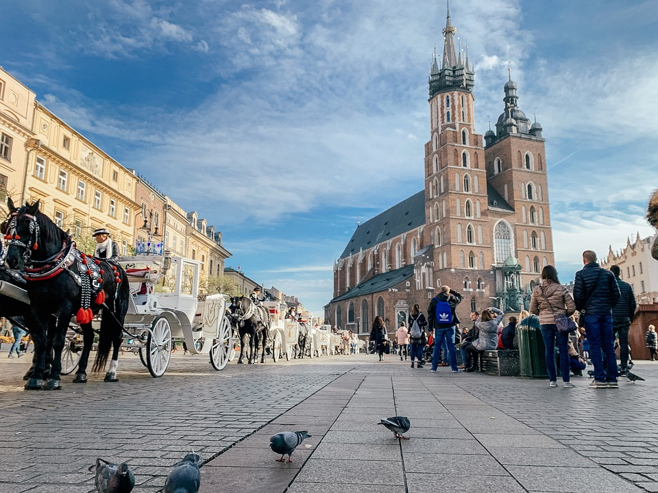

Welcome to Europe! When I was 12, my family and I toured Vienna and Salzburg. A few years later, traveled to England. My parents actually surpried my sister and I by taking a day trip to Paris. After a quick train ride, we packed as many Parsian sites in as possible. Let's go!
Austria is famous for art and films. Mozart grew up in Vienna, and people are very proud of their connection to him. On the trip, we walked through a beautiful garden honoring Mozart. After a quick flight over the countryside, we landed in Salzburg. Famously, the Sound of Music was filmed in the city. We took a bike tour of scenes from the movie. One of my favorite sites was seeing the Liesl and Rolf's gazebo.
History and modernity blends together in London. We saw many sites, like the Big Ben, the London Eye, and the Churchill War Rooms. London's streets are filled with new and unique shops - window shopping is a must!
Finally, we've reached the City of Love: Paris. Even though I spent less than a day in Paris, I saw two of the go-to spots. After munching on authentic crêpes and baguette sandwiches, I visited the Eiffel Tower, which is famous for proposals, and the Mona Lisa in le Louvre.
       